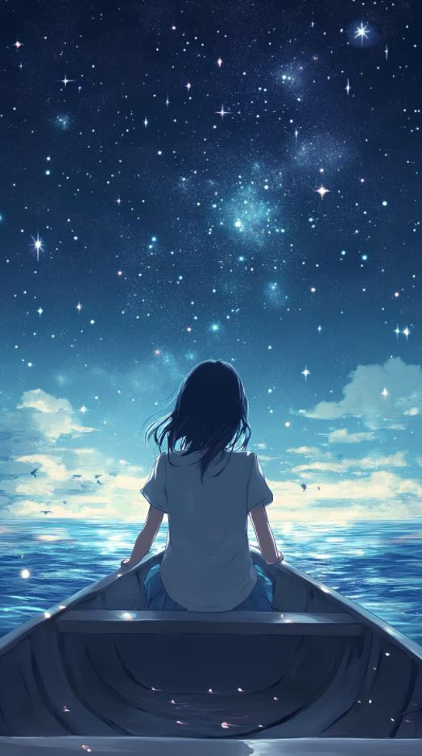
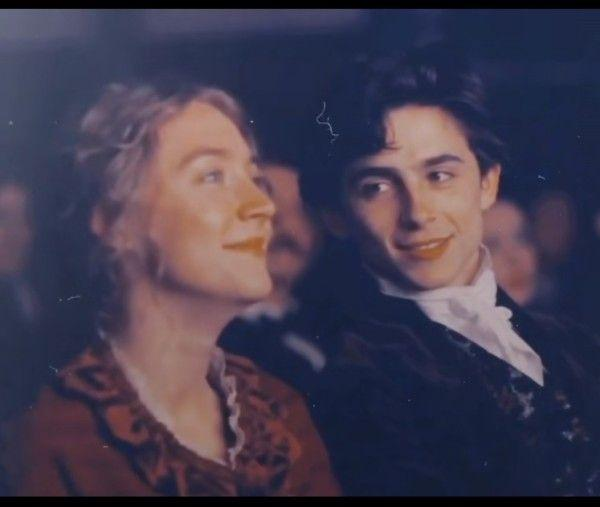
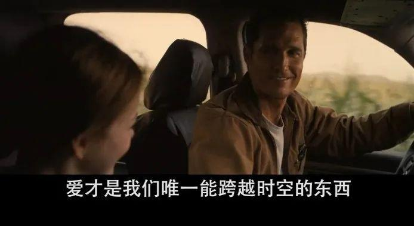

welcome to my website
这个世界上好看的脸蛋太多，有趣的灵魂太少。而如王小波这般睿智、有趣、理性又特立独行的人，你很难遇上第二个。
1997年4月11日，王小波去世，至今已有27年，尽管王小波大概不喜欢这种无趣的纪念，但每逢这天，我们总是会有意无意的怀念起他。
你可以点击 https://baike.baidu.com/item/%E7%8E%8B%E5%B0%8F%E6%B3%A2/6673 了解王小波生平。

part 3 学会去爱别人
我的勇气和你的勇气加起来，对付这个世界总够了吧? 去向世界发出我们的声音，我一个人是不敢的， 有了你，我就敢 。--《爱你就像爱生命》
爱是唯一跨越时间的东西。--《星际穿越》
一提到爱，或许大多数人脑海中最先出现的都是炽热而又令人向往的爱情，但爱并不是狭义的两情相悦，不是简单的儿女情长。爱能给予我们力量，给予我们去生活的力量。小时候，我们总是羞于对父母，对家人说我爱你，很多人终其一生都没有向父母表达自己对于他们的爱。在很多人的印象里，父亲一直是严厉，不善言辞，沉默的形象，他可能会在你做错事时打，骂。却又不善于去表达歉意。考上了大学我们会想去逃离他，想要去证明自己并不是那个不争气的小孩。可我们不知道的的是，父母并不需要我们证明自己有多优秀，他们需要的只不过是偶尔的一次电话，一次寒暄。

这是一个很水的网页作业。